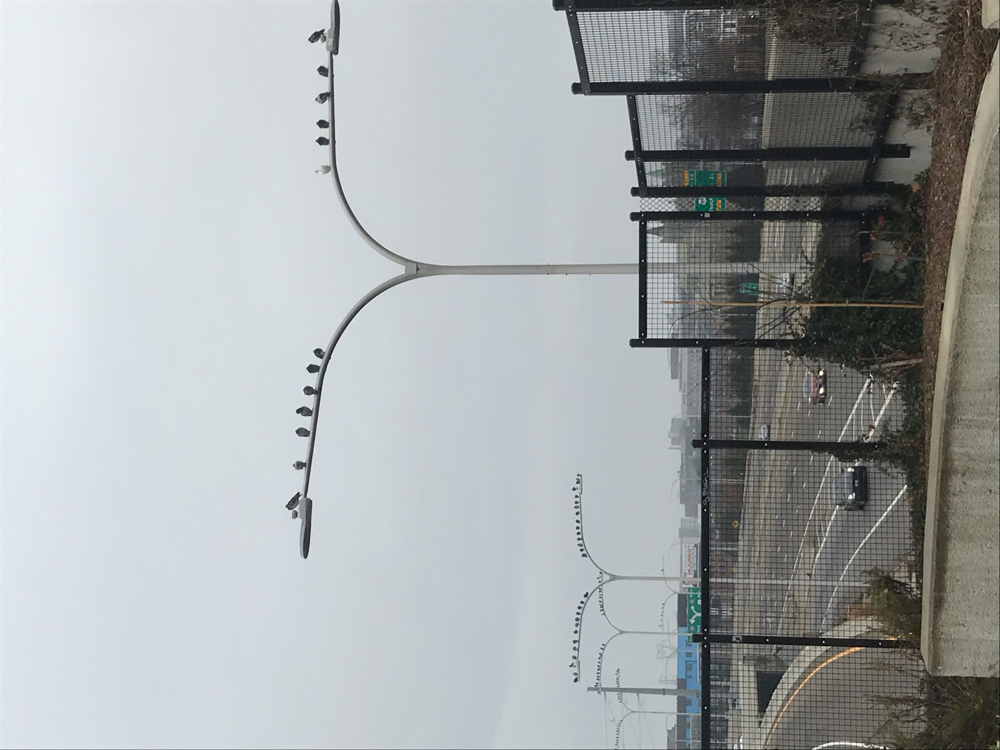

foggy day
After I dropped Shao off at work today, I walked around fox point for an hour or so. I went down Wickendon to India Point Park, which was infested with runners brandishing their bright pink legs, and stood by the water for a while. It was foggy all morning. By noon, the fog gave way to a heavy rain.
discrete: version 2 of ...
Listen. You must listen.
What do a square, a circle,
a boy, a girl, a tree, a fish
have in common?
They are all discrete,
like a light switch,
like yes or no.
Be discrete. Can I count
on your discretion
when I say, Sometimes
I wake up not in a flash
but slowly, dream mingling
with reality for hours, days, years?
I'm always at the limit
of what I am, bending toward
the threshold.
How discrete can you be
when I find that no void,
no death separates me from you
from my pen on the page
but the osmotic tug,
the vertiginous freefall?